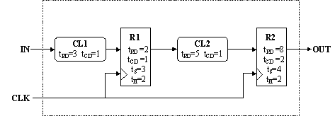
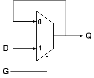

Problem 1. Consider the following diagram of a simple sequential circuit:  The components labeled CL1 and CL2 are combinational; R1 and R2 are edge-triggered flip flops. Timing parameters for each component are as noted.
-
 Write the timing specifications (tS, tH, tCD, tPD, tCLK) for the
system as a whole using the timing specifications for the internal
components that are given in the figure.
It's a good idea to check if the circuit will work for any clock period. We check this by checking if the total contamination delay from R1 to R2 is long enough to cover the hold time of R2. In other words,
Write the timing specifications (tS, tH, tCD, tPD, tCLK) for the
system as a whole using the timing specifications for the internal
components that are given in the figure.
It's a good idea to check if the circuit will work for any clock period. We check this by checking if the total contamination delay from R1 to R2 is long enough to cover the hold time of R2. In other words,-
tH,R2 <= tCD,R1 + tCD,CL2
2 <= 1 + 1
2 <= 2-
tS = tPD,CL1 + tS,R1 = 6, and
tH = tH,R1 - tCD,CL1 = 1.-
tCD = tCD,R2 = 2, and
tPD = tPD,R2 = 8.-
tCLK >= tPD,R1 + tPD,CL2 + tS,R2
tCLK >= 2 + 5 + 4
tCLK >= 11-
Suppose you had available a faster version of CL2 having a propagation
delay of 3 and a contamination delay of zero. Could you substitute
the faster CL2 for the one shown in the diagram? Explain.
You could not substitute the faster CL2 because our hold time constraint for R2 would not be met. The sum of the contamination delays between R1 and R2 must be greater than the hold time of R2. Using the faster CL2 would reduce the contamination delay sum to 1 which is not greater than the hold time, 2, of R2.
-
We've been treating wires as idealized components that introduce no
delay of their own. In the real world, wires have resistance,
capacitance and inductance that will cause different frequencies to
propagate along the wire at different rates. This means that wires
will delay the arrival of sharp rising and falling transitions (which
you'll remember from Fourier analysis have signal components at many
different frequencies). This effect is particularly bothersome in
connection with clock signals since the clock may arrive at separate
parts of the circuit at slightly different times. This difference in
arrival times of the clock is called clock skew, which we'll model in
our simple circuit above as explicit delays along each clock path:

-
Rewrite the timing specifications for the system as a whole taking
into account d1 and d2. Don't make any assumption about the
relative sizes of the two delays.
The delay d1 causes all timing specifications associated with register R1 to be shifted later in time by d1. Likewise the delay d2 causes all timing specifications associated with register R2 to be shifted later in time by d2. Note that we still use the original clock signal as our reference for the system, so the setup times for the registers R1 and R2 become shorter by d1 and d2, respectively, and the hold times for R1 and R2 become longer by d1 and d2. The timing specifications of the system, taking d1 and d2 into account, are:
-
tS = tPD,CL1 + tS,R1 - d1 = 6 - d1
tH = tH,R1 - tCD,CL1 + d1 = 1 + d1
tCD = tCD,R2 + d2 = 2 + d2
tPD = tPD,R2 + d2 = 8 + d2
-
tCLK >= tPD,R1 + tPD,CL2 + tS,R2
tCLK >= 2 + d1 + 5 + 4 - d2
tCLK >= 11 + d1 - d2-
The relative clock skew (d2 - d1) between two registers connected in
a "pipeline" - where the output of the first register is connected,
usually through logic, to the input of the second register - can also
affect the design of a circuit. Explain how relative clock skew
affects the maximum clock frequency of the circuit shown above.
Remember that the relative skew might be positive or negative.
As shown in part (C), tCLK >= 11 - (d2 - d1), rewritten to show the relative clock skew term. One can see that as the relative clock skew becomes positive, the maximum clock frequency increases. Conversely, as the relative clock skew becomes negative, the maximum clock frequency decreases.
-
[Why clock skew keeps integrated circuit designers awake at night.] If
d2 > d1, the circuit shown above will not operate correctly.
Explain why. Will changing the frequency of CLK solve the problem?
Why or why not?
Let's revisit the constraint that the contamination delay from R1 to R2 must cover the hold time of R2:
-
tH,R2 <= tCD,R1 + tCD,logic
2 + d2 <= 1 + d1 + 1
d2 <= d1-
Suggest a way for the designer to change his circuit to guarantee
correct operation given an upper bound, tskew > abs(d2 - d1), on the
maximum relative clock skew. Assume that the timing parameters of the
registers cannot be adjusted.
Adding additional contamination delay, such as a buffer between R1 and R2, will work. This leads to a circuit which has a larger clock period overall.
Problem 2. The following circuit diagram implements a sequential circuit with two state bits, S0 and S1:
-
What is the smallest clock period for which the circuit still
operates correctly?
There are two contraints to check:
-
tPD,REG + tPD,INV + tPD,INV + tS,REG <= tCLK
tPD,REG + tPD,NOR2 + tS,REG <= tCLK-
A sharp-eyed student suggests optimizing the circuit by
removing the pair of inverters and connecting the Q output of the left
register directly to the D input of the right register.
If the clock period could be adjusted appropriately, would the optimized
circuit operate correctly? If yes, explain the adjustment to the clock
period that would be needed.
No, the circuit won't operate correctly since tCD,REG < tHOLD,REG, i.e., the output of the left register doesn't meet the required hold time when connected directly to the input of the right register.
-
When the RESET signal is set to "1" for several cycles, what
values are S0 and S1 set to?
S0 = 0, S1 = 0.
-
Assuming the RESET signal has been set to "0" and will stay
that way, what is the state following S0=1 and S1=1?
S0 = 1, S1 = 0.
-
Now suppose there is skew in the CLK signal such that the
rising edge of CLK always arrives at the left register exactly 1ns
before it arrives at the right register. What is the smallest clock
period for which the circuit still operates correctly?
Fortunately the skew doesn't introduce any hold time problems with the input to the right register. tCLK can now be as small as 8ns (both paths between registers fit exactly).
Problem 3. A possible implementation of a sequential circuit with one input and one output is shown below.
-
What is the smallest value for the ROM's contamination delay
that ensures the necessary timing specifications are met?
tCD,REG + tCD,ROM >= tH,REG, so tCD,ROM >= 0.75ns.
-
Assume that the ROM's tCD = 3ns. What is the smallest clock
period that ensures that the necessary timing specifications are met.
tPD,REG + tPD,ROM + tS,REG = 2 + 5 + 1 = 8ns.

-
Assuming that the clock period is 25ns, what is the maximum setup
time for the flip-flops for which this circuit will operate correctly?
tS <= tCLK - tPD,REG - tPD,LOGIC = 25 - 6 - max(11,9) = 8ns.
-
Assuming that the clock period is 25ns, what is the maximum hold
time for the flip-flops for which this circuit will operate correctly?
tH <= tCD,REG + tCD,LOGIC = 2 + min(4,5) = 6ns.
Problem 4. In lecture, you saw a static latch constructed from a 2-input lenient MUX as shown in the diagram below.  Recall that the MUX selects the Q output when G=0, and the D input when G=1. The plan is that when G=1, the Q output will follow D after a short delay; when G=0, the current Q output will be "latched" via the feedback path. In this problem we explore assumptions necessary to construct an informal proof that the latch behaves as proposed. Assume, in each of the following, that the MUX is a well-behaved lenient combinational device with a propagation delay of tpd. Recall that the lenience of the MUX allows us to assume that if any two of its inputs sufficient to determine its output are stable and valid for at least tpd, then the MUX output will be stable and valid.-
Specify constraints on the two data inputs of the MUX sufficient to
guarantee that its output will be stable and valid independently of
the value on the select input.
When both data inputs are equal, valid and stable for tpd, the output is valid and stable independent of the select signal.
-
Specify constraints on a single data input and the select input of the
MUX sufficient to guarantee stable and valid output independently of
the value on the remaining data input.
When G is 0 and both G and Q are stable and valid for tpd or when G is 1 and both G and D are stable and valid for tpd, the MUX will have a valid and stable output indenpedent of the other data input.
-
Now we explore the scenario where G=1 and D has been stable and valid
for ts seconds prior to a 1-to-0 transition on G, and remains stable
and valid until th seconds after the transition on G. Our goal is to
establish that, for sufficiently large values of ts and th, the latch
behaves as advertised.
Consider the initial interval in the above scenario where G=1. At
what point is Q=D guaranteed? Explain why in a sentence or two.
After G and D have been stable and valid for tpd, the output Q will equal the data input D.
-
Explain why, for sufficiently large values of tS the output Q remains
stable despite invalid voltages on G. What is the setup time required
to guarantee output validity during the transition on G?
Part C tells us that Q will equal D tpd after D becomes valid. According to the leniency requirement, the output will be guaranteed valid and stable tpd after the inputs necessary to determine the output become valid and stable. In this case, both Q and D must be valid and stable tpd in order to ensure Q remains stable and valid independent of transitions on G. Thus tS must be greater than 2*tpd.
-
Now assume that D changes tH seconds after the transition on G.
Explain why, for a sufficiently large value of tH, the Q output will
remain stable independently of D.
In order to ensure the Q remains stable and valid independent of D, G must be set to a valid logic "0" for tpd before D transitions. Thus, tH must be greater than tpd.
-
Identify which of your previous answers is dependent on the MUX being
lenient, giving a single-sentence description of the dependence.
All of the previous answers are dependent on the MUX being lenient. In each case we discuss the necessity for two inputs to be valid and stable for tpd in order to ensure the output is valid and stable. If the MUX were not lenient, all three inputs would have to be valid and stable for tpd in order for the output to be guaranteed valid and stable.
-
Does the operation of the above latch depend on the contamination
delay of the MUX? Explain.
The latch does not depend on contamination delay. It only depends on the leniency of the MUX and that tS and tH requirements are met.
-
Your analysis has established setup and hold time requirements
necessary to guarantee proper operation of the latch. Suppose, in the
above scenario, the setup or hold time requirement is violated? What
can you say about the value on Q?
If the setup and hold times are violated, the value of the output cannot be determined.
-
Your analysis has established setup and hold time requirements
necessary to guarantee proper operation of the latch. Suppose, in the
above scenario, the setup or hold time requirement is violated? What
can you say about the value on Q?
-
Does the operation of the above latch depend on the contamination
delay of the MUX? Explain.
-
Identify which of your previous answers is dependent on the MUX being
lenient, giving a single-sentence description of the dependence.
-
Now assume that D changes tH seconds after the transition on G.
Explain why, for a sufficiently large value of tH, the Q output will
remain stable independently of D.
-
Explain why, for sufficiently large values of tS the output Q remains
stable despite invalid voltages on G. What is the setup time required
to guarantee output validity during the transition on G?
-
Now we explore the scenario where G=1 and D has been stable and valid
for ts seconds prior to a 1-to-0 transition on G, and remains stable
and valid until th seconds after the transition on G. Our goal is to
establish that, for sufficiently large values of ts and th, the latch
behaves as advertised.
Consider the initial interval in the above scenario where G=1. At
what point is Q=D guaranteed? Explain why in a sentence or two.
-
Specify constraints on a single data input and the select input of the
MUX sufficient to guarantee stable and valid output independently of
the value on the remaining data input.
-
Specify constraints on the two data inputs of the MUX sufficient to
guarantee that its output will be stable and valid independently of
the value on the select input.
-
Assuming that the clock period is 25ns, what is the maximum hold
time for the flip-flops for which this circuit will operate correctly?
-
Assuming that the clock period is 25ns, what is the maximum setup
time for the flip-flops for which this circuit will operate correctly?
-
Assume that the ROM's tCD = 3ns. What is the smallest clock
period that ensures that the necessary timing specifications are met.
-
What is the smallest value for the ROM's contamination delay
that ensures the necessary timing specifications are met?
-
-
-
-
-
-
Suggest a way for the designer to change his circuit to guarantee
correct operation given an upper bound, tskew > abs(d2 - d1), on the
maximum relative clock skew. Assume that the timing parameters of the
registers cannot be adjusted.
-
[Why clock skew keeps integrated circuit designers awake at night.] If
d2 > d1, the circuit shown above will not operate correctly.
Explain why. Will changing the frequency of CLK solve the problem?
Why or why not?
-
The relative clock skew (d2 - d1) between two registers connected in
a "pipeline" - where the output of the first register is connected,
usually through logic, to the input of the second register - can also
affect the design of a circuit. Explain how relative clock skew
affects the maximum clock frequency of the circuit shown above.
Remember that the relative skew might be positive or negative.
-
We've been treating wires as idealized components that introduce no
delay of their own. In the real world, wires have resistance,
capacitance and inductance that will cause different frequencies to
propagate along the wire at different rates. This means that wires
will delay the arrival of sharp rising and falling transitions (which
you'll remember from Fourier analysis have signal components at many
different frequencies). This effect is particularly bothersome in
connection with clock signals since the clock may arrive at separate
parts of the circuit at slightly different times. This difference in
arrival times of the clock is called clock skew, which we'll model in
our simple circuit above as explicit delays along each clock path:
-